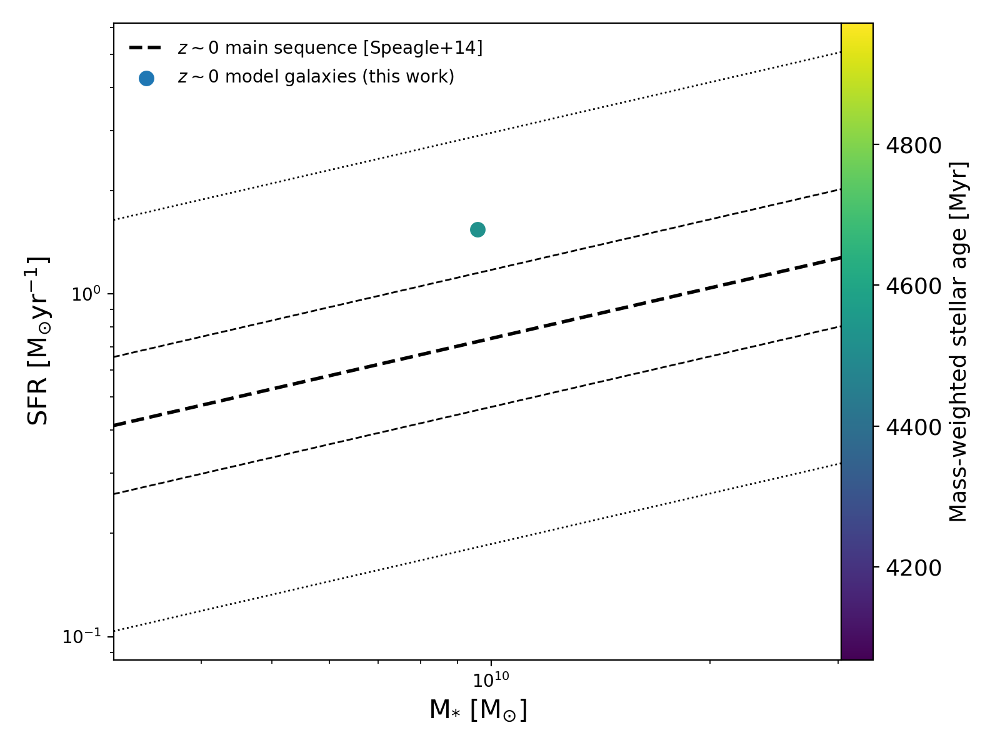

Quickstart¶
Import SÍGAME¶
SÍGAME has been tested in python v2.7.14 so far. To get started, import the SÍGAME module like this:
import sigame as si
Other than the standard modules that come with most python distributions, the user might need to install the module periodictable with e.g.:
pip install periodictable
If all goes well, the following output should be printed to the terminal:
=======================================================
.oOOOo. ooOoOOo .oOOOo. Oo Oo oO o.OOoOoo
o o O .O o o O O O o o O
O. o o O o o o O O o
`OOoo. O O oOooOoOo O Oo O ooOO
`O o O .oOOo o O O o O
o O o. O O o o O o
O. .O O O. oO o O o O O
`oooO' ooOOoOo `OooO' O. O O o ooOooOoO
=======================================================
SImulator of GAlaxy Millimeter/submillimeter Emission
-- A code to simulate the far-IR emission lines of the ISM --
----------- in galaxies from hydrodynamical codes ------------
--- for the interpretation and prediction of observations. ---
-- Contact: Karen Pardos Olsen, kpolsen (at) asu.edu (2018) --
The user will then be asked to choose a redshift for the sample of model galaxies to be analyzed. The default is z=0, corresponding to the test galaxy that comes with the newest release. Choosing z=0 will prompt the code to look for a file called “parameters_z0.txt” which contains the setup under which SÍGAME will run.
At the bottom of the parameter file, the following lines let the user select which tasks will be executed on the galaxy sample:
For example, the above selection will run the “subgrid task” the galaxies (step number 2 described in the Overview) and nothing else on the galaxy sample. To execute the tasks selected, save the parameter file, restart python and type:
import sigame as si
si.run()
Note
Some of the backend tasks (subgrid and datacubes) make use of the multiprocessing module in python, assuming by default that 4 cores are available. The code might run very slow if the computer in use has fewer cores to work with, or if several cores are being idle. To change the number of cores available, and hence used by SÍGAME, go to the parameter file (parameters_z0.txt) and edit the following part:
Test plot: Plot SFR vs stellar mass¶
To check that SÍGAME can find and read the test galaxy supplied with the newest release, make sure that SÍGAME was imported correctly (see above) and try to execute the following in python:
import sigame as si
si.plot.SFR_Mstar()
This should produce the following plot:
Create datacubes of line emission¶
Note
The release version comes with one test galaxy and all the tools to create line emission at z=0 for the following lines; [CII]158 and [NII]205. For other redshifts, please contact us.
To calculate line emission from a raw galaxy dataset, SÍGAME needs to go through a set of tasks. These tasks are selected by editing the bottom lines in the parameter file (parameters_z0.txt) to read:
This will include the following tasks:
|
Start (or restart) python, and call the run() function located in backend.py like this:
import sigame as si
si.run()